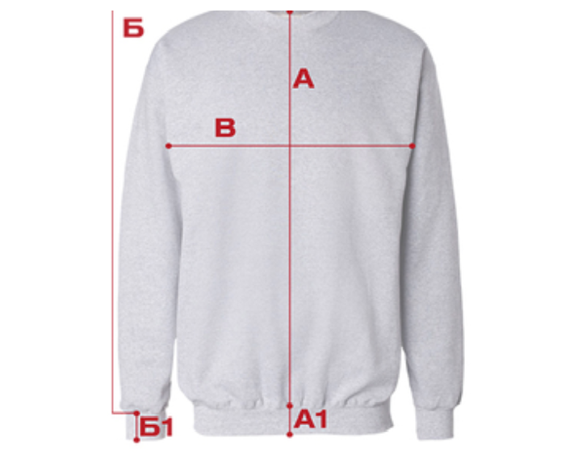

Савети за избор одговарајуће величине
Инструкције
Имајте у виду да наше дуксерице нису биле изложене пред-прању. То значи да скупљања после првог прања у принципу и нема али у појединим случајевима се може десити да дође до максималног скупљања од 1% како по дужини тако и по ширини.
Крој је нама својствен и посвећено му је пуно времена и пажње и може се слободно рећи да је "слим фит" фазон у питању.
Зато не брините при избору величине да ће се дукс скупити након прања.
